Release 3.3 Copyright ©1995 by NeXT Computer, Inc. All Rights Reserved.
| 2 |
Entity-Relationship Modeling
| A database server stores data in the structures that it defines: A relational database uses tables to store data, an object-oriented database uses objects, a file system uses files, and so on. Regardless of the server's natural bias, the Database Kit creates tables into which database data is fetched. The organization of these tables emulates the organization of the data structures on the server. But the Database Kit needs some help in configuring the tables. You have to provide a database model that describes the server's data structures in terms that the Database Kit can understand. These terms are those of Entity-Relationship modeling (or E-R modeling).
Entity-Relationship modeling isn't unique to the Database Kit; it's a popular discipline with a set of rules and terms that are documented in database literature. The Database Kit uses a modified version of the traditional rules of E-R modeling. This chapter presents the E-R terms and concepts as they are used by the Kit. The next chapter, "Database Models," puts these concepts into practice. |
| Modeling Objects |
| In an Entity-Relationship model, distinguishable things are known as entities, each entity is defined by its component attributes, and the affiliations, or relationships, between entities are identified. From these three simple modeling objects (entities, attributes, and relationships), arbitrarily complex systems can be modeled--a company's customer base, a library of books, a network of computers, and so on, can all be depicted as E-R models. If the parts of a system can be identified, the system can be expressed as an E-R model.
Pure Entity-Relationship modeling is independent of native database architecture. Theoretically, an E-R model can be implemented as a relational database, an object-oriented database, a file system, or any other data storage system. In practice, the version of E-R modeling used by the Database Kit fits most naturally with relational databases; in other words, with databases that store data in two-dimensional tables. This follows from the Database Kit's use of tables as the buffers in which it stores data that's fetched from the server. The examples and illustrations in this chapter follow this lead by posing a hypothetical relational database server from which data is drawn.
Conventions Throughout this manual, the names of entities, attributes, and relationships are presented typographically as Entity, attribute, and relationship. The naming conventions for the three modeling objects are given as the objects are described in this chapter. |
| Entities and Attributes |
| Imagine that you're creating an Entity-Relationship model for a library of books. Your first task is to identify the classes of "things," considered abstractly, that you want to characterize; each such class becomes an entity. An obvious entity for a library is Book.
Contained within an entity is a list of features, or attributes, of the thing that's being modeled. The Book entity would contain attributes such as title, author, publisher, and so on. This simple model is depicted in Figure 3. |
| 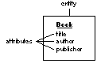 |
| Figure 3. The Book Entity
Names and Model Paths Every modeling object is identified by a unique, case-sensitive name. By convention, entity names are capitalized and attributes aren't; thus, as shown above, you have a Book entity and title, author, and publisher attributes. An attribute can be distinguished as belonging to a particular entity through the model path format "Entity.attribute". For example, the model path Book.title identifies the title attribute in the Book entity.
Data Entities and attributes represent structures that contain data. In a relational database, entities represent tables; an entity's attributes represent the table's columns. An example table that could be represented by the Book entity (and that will be used through most of this chapter) is shown below: |
| 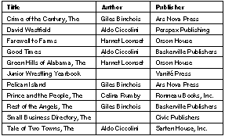 |
| Figure 4. The "BOOK" Table
Each row in the table is called a record. A record is also referred to as an "instance of an entity." Thus, a book record is called an instance of the Book entity.
Names and the Data Dictionary The table and column names shown in Figure 4 are the names that a hypothetical server might use. The collection of a server's table and column names is called its data dictionary. In your application, you can't refer directly to items in the server's data dictionary. To identify the server's "BOOK" table, for example, you must refer to the entity that represents the table--in other words, the Book entity. The correspondence between the server's names and the names of the modeling objects that you create isn't coincidental; you have to tell each modeling object which data dictionary name it represents. This is done as you create the model, a subject that's addressed in the next chapter. Server names (in other words, names in a server's data dictionary) are, typically, case-insensitive. As mentioned previously, the names of modeling objects are case-sensitive. Throughout this chapter (and the rest of this manual) modeling objects are given names that match, but for case, the corresponding dictionary names (given the hypothetical relational database server that's used in the examples). To distinguish the two, the server names are upper-case and quoted--for example, the "BOOK" table--while modeling object names follow the conventions already described.
Attribute Data When you use an attribute to identify a particular datum in a table, you refer to the value for that attribute, given a particular record. The author of a book, for example, is the value for the Book.author attribute. The "value for an attribute" construction enforces the notion that the attribute itself doesn't contain data.
NULL Data Notice that not every book in the table shown in Figure 4 has an author. If a record's value for a particular attribute can't be determined (or doesn't exist), the value is said to be NULL.
Data Types Every attribute is assigned a data type (such as int, char *, and so on). All values for a particular attribute take the data type of that attribute. In other words, the values in a particular column are all of the same type. None of the candidate data types (which are described in the next chapter) allow lists of data; the value for a particular attribute in a particular record must be a single datum. Thus, the model shown in Figure 3 says more than simply that a book has a title, an author, and a publisher. It signifies that every book has a single title, a single author, and a single publisher (where any of these single values can be NULL). This "atomic attribute rule" will become particularly important in the discussion of relationships, later in this chapter.
The Primary Key Each of the records in a table must be unique--no two records can contain exactly the same values. To ensure this, the entity from which the records are instantiated must contain an attribute that's guaranteed to represent a unique value for each record. This attribute is called the entity's primary key. The Book entity, as defined above, doesn't contain a primary key. If the library were to contain two copies of the same book, the records for the two books wouldn't be distinguishable from each other. To amend this, a primary key called bookID--an attribute for which each distinct book takes a unique (and arbitrary) value--is added to the Book entity. Figure 5 shows the amended entity; the primary key is marked with a bullet. |
| 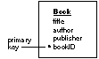 |
| Figure 5. Book Entity with Primary Key
An entity can contain any number of attributes that represent unique data, but only one of them needs to be declared as a primary key. Declaring more than one as a primary key is allowed--this creates a compound primary key, as described below--but it should be avoided if possible. In other words, if you have more than one "unique data" attribute in an entity, you should choose one of them to act as the primary key.
Primary Key Significance The data that a primary key signifies needn't correspond to an actual facet of the entity. In other words, the value for a primary key can be arbitrary. The bookID attribute used above is an example of a primary key that represents "meaningless" values: A book record's value for the bookID attribute wouldn't tell you anything about the actual ("real-world") book. The value would only distinguish that particular record from other book records.
Compound Primary Keys Typically, the primary key for an entity is a single attribute. However, it's possible to designate a combination of attributes as a compound primary key. In a compound primary key, the value for any one of the constituent attributes isn't necessarily unique, but the combination of all of them is. For example, every book in our library could be uniquely identified through a combination of its ISBN number and an additional copy number (to distinguish multiple copies of the same book). Taken on their own, neither of these numbers is necessarily unique for all books, but the combination of the two is. Figure 6 illustrates a modification of the Book entity (renamed ISBNBook) in which the attributes ISBNNum and copyNum form a compound primary key. |
| 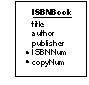 |
| Figure 6. Entity with Compound Primary Key
A compound primary key doesn't provide a benefit beyond that of a simple primary key. For example, the ISBNBook entity doesn't, by force of its compound key, let you do anything that the simpler Book entity lets you do. Furthermore, the simplicity of a single-attribute primary key make its a better choice than the compound key alternative. So why would you ever choose to use a compound primary key? Actually, you seldom choose to do so: Some entities demand compound keys. This is demonstrated in the section "Simulating a Bidirectional Relationship," later in this chapter. |
| Relationships |
| If you lend books from your library, you would probably have, in addition to the Book entity, a Borrower entity that characterizes a book borrower's name, address, telephone number, and so on. There's an obvious affinity between books and borrowers: Books are lent to borrowers. To express this affinity in an E-R model, you create a relationship between the Book entity and the Borrower entity. Graphically, a relationship is shown as a named arrow that points from one entity to another; the Book-Borrower relationship (which is named toBorrower) is depicted in Figure 7.
Note: To support the toBorrower relationship, the Book entity has been altered--the borrowerID attribute has been added to it. This is explained in "Relationship Keys," below. |
| 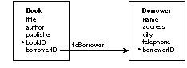 |
| Figure 7. The toBorrower Relationship
Relationship Names It's suggested that you name your relationships "toEntity", just as the relationship drawn in Figure 7 is named toBorrower. However, this convention is often sacrificed in deference to purpose; an example of this is given in "Reflexive Relationships," below.
Relationships and the Data Dictionary Unlike entities and attributes, relationships don't correspond to names in the server's data dictionary. In general, most servers don't define structural elements for relationships, so their data dictionaries don't contain names to which E-R relationships can correspond. But relationships aren't completely disassociated from the data dictionary: A relationship's definition, as explained in the next section, depends on the existence of particular entities and attributes (which, as described earlier, must correspond to data dictionary names).
Relationship Keys The construction of a relationship involves more than just two entities. You also have to designate an attribute from either of the entities as relationship keys. In the toBorrower relationship, the Book.borrowerID and Borrower.borrowerID are so designated; this is indicated in Figure 7 as the two attributes lie at either end of the relationship arrow. The reason you need to designate relationship keys is so the relationship can be used to create cross-references between specific instances of the related entities (this is called "resolving" the relationship). For example, let's say you want the record of the borrower that checked out the book Farewell to Farms. You tell the toBorrower relationship to resolve itself: It gets the value for the book's borrowerID attribute (which identifies the borrower and was set when the book was checked out), and compares it to the value for borrowerID in each Borrower instance. A match locates the desired borrower record. For this cross-referencing scheme to work, the two relationship keys must characterize the same data--you couldn't find a book's borrower by comparing, for example, Book.bookID to Borrower.borrowerID. This is why the borrowerID attribute was added to the Book entity.
The Example with Data To further the example of how a relationship is resolved, consider the "BOOK" and "BORROWER" tables presented below (for brevity, only the essential columns are shown). |
| 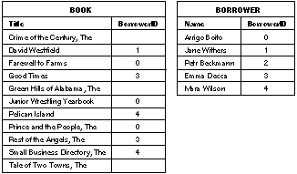 |
| Figure 8. "BOOK" and "BORROWER" Tables
Here we see that the value for the borrowerID attribute for the book that's titled Farewell to Farms is 0. Looking in the "BORROWER" table, we see that 0 is the ID of Arrigo Boito. Thus, Farewell to Farms is currently checked out to Mr. Boito. Similarly we can determine that Mara Wilson has Pelican Island checked out, Good Times is being read by Emma Decca, and so on. Note: Reading on through the "BOOK" table, you'll notice that the record for The Crime of the Century has a NULL value for its borrowerID attribute. The meaning of the value is clear: The book isn't currently checked out. But it raises an important question: What happens when an attempt is made to resolve the relationship for this record? The answer is given later in this chapter.
Choosing the Keys Any attribute can be used as a relationship key, but some are better suited than others. In general, of the two relationship keys for a particular relationship, one key will be a primary key for its entity (or, otherwise, an attribute that characterizes unique data) and the other key is manufactured to emulate the first. In traditional E-R modeling, the emulating attribute is called a foreign key. The toBorrower relationship demonstrated this: The relationship key in the Borrower entity is borrowerID, the primary key for that entity. The borrowerID attribute is added to Book as a foreign key. With regard to the toBorrower relationship, you may wonder why the Book entity's primary key (bookID) wasn't chosen as a relationship key. The simple answer is that the presence of the requisite foreign key, Borrower.bookID, would mean that a borrower could only check out one book at a time (this follows from the atomic attribute rule). Rare is the library that imposes a one-book limit.
Compound Relationships A relationship's keys needn't be single attributes from the related entities; any number of attributes can be paired as relationship keys within the same relationship. A relationship that designates more than one pair of keys is called a compound relationship. For example, consider a variation of the Borrower entity (which we'll call NamedBorrower) that uses the attributes firstName and lastName as a compound primary key (using human names for unique identification is a bad idea, but it serves the purpose). To support the toNamedBorrower relationship, borrowerFirstName and borrowerLastName attributes are added as foreign keys to Book. This is depicted in Figure 9. |
| 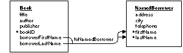 |
| Figure 9. A Compound Relationship
Note: The keys in a compound relationship can be a combination of any attributes--not just a compound primary key (or foreign keys to a compound primary key). Conversely, you can use a single attribute from a compound primary key as a relationship key in a simple (non-compound) relationship. Relationship keys always come in pairs (whether the relationship is simple or compound). In other words, if the relationship uses a two-attribute relationship key in one entity, the other entity must also have two relationship keys. If the one has three relationship keys, the other must have three, and so on. The routine that's used to resolve a compound relationship is similar to that for a simple relationship. The only difference is the number of pairs of relationship key values that are compared. For two records to correspond, each of the comparisons must be successful.
Ownership In the figures in this book, the entity that owns a relationship is the one adjacent to the relationship's label. For example, in Figure 10 the Book entity owns the toBorrower relationship, as indicated by the proximity of the "toBorrower" label. A relationship's owner is called its source entity; the entity to which it points is called the destination entity. In the example below, the source entity of the toBorrower relationship is Book; its destination entity is Borrower. Similarly, the relationship key in the source entity is called the source key; the destination's relationship key is the destination key. (By extension, the table that's represented by the source entity can be called the "source table", the source table contains "source records," and similarly for the destination table and its records.) The components of the toBorrower relationship are labeled in Figure 10. |
| 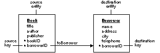 |
| Figure 10. toBorrower's Source and Destination
Note: As in the case of the toBorrower relationship, the source and destination keys often have the same name, although this isn't a requirement of model design.
Unidirectionality A consequence of relationship ownership (by the source entity) is unidirectionality. In a unidirectional relationship, the path that leads from the source to the destination can't be traveled in the opposite direction--you can't use a relationship to go from the destination to the source. For example, although you can use the toBorrower relationship to find the borrower of a particular book, you can't use it to get a list of the books that a borrower has checked out. Unidirectionality is enforced by the way a relationship is resolved. Specifically, the source record is a given: Resolving a relationship means finding the correct destination record (or, as explained later, multiple records) given a specific source record. To simulate a bidirectional relationship--in which you can look up records in either direction--you have to create a separate "return-trip" relationship. This is demonstrated in a later section.
Reflexive Relationships The source and destination entities in a relationship needn't be different. Where the entities in a relationship are the same, a reflexive relationship is created. Reflexive relationships are important in characterizing a system in which an instance of an entity points to another instance of the same entity. For example, rather than restrict the use of the Book entity to characterize individually bound works in your library, you may want it to represent individual stories in an anthology, articles in a journal, entries in an encyclopedia, and so on. A particular book record may, therefore, need to point to another book record that describes the "volume" (in other words, the anthology, journal, encyclopedia) that it's part of. To represent this, you create a reflexive relationship as shown in Figure 11. |
| 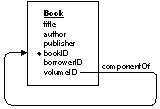 |
| Figure 11. A Reflexive Relationship
Note: The name of the relationship, componentOf, doesn't follow the relationship naming convention suggested earlier in this chapter. However, it follows from the meaning of the relationship, and meaning takes precedence over form. The volumeID attribute acts as the relationship's source key; bookID is the destination key. Where a book's volume ID matches another book's book ID, the first book is said to be a component of the second. If a book isn't part of a volume, the value for the volumeID attribute is NULL (in that book's record). Reflexive relationships can represent arbitrarily deep recursions. Thus, from the model above, a book can be part of a book that's part of yet another book, and so on. This is useful if, for example, you want to characterize an article as being part of a particular issue of a journal. You would create a book record for the article, the issue in which it appears, and the journal taken as a whole, setting the value for the volumeID of the article to match the value for the bookID of the issue, and the volumeID of the issue to match the bookID of the journal. The value for the journal's volumeID would be NULL, thus denoting that it's the last rung in the recursion.
Model Paths Because it's owned by an entity, a relationship can be identified through a model path. The format of a relationship's model path name is "SourceEntity.relationship"; for example, Book.toBorrower. Furthermore, you can extend the model path through a relationship and on to an attribute in the destination entity through the form "SourceEntity.relationship.destinationAttribute". However, it's important to understand that this "relationship traversal" form of identifying an attribute doesn't mean the same thing as identifying the attribute as it lies naturally in its entity. The difference is in the range of values that the attribute represents. For example, the range of values for the simple model path Borrower.name is any value that appears in the "NAME" column of the "BORROWER" table. The values for the Book.toBorrower.name path, on the other hand, are only those names that can be gotten by resolving the Book.toBorrower relationship. If a particular borrower doesn't have any books checked out, then Book.toBorrower.name will never find that borrower's name.
Relationship Degree Every relationship has a degree; the degree tells you how many destination records can (potentially) resolve the relationship. The Database Kit defines two degrees, to-one and to-many: |
| In a to-one relationship, for each source record there's no more than one corresponding destination record. | ||
| In a to-many relationship, for each source record there may be more than one corresponding destination record. |
| The toBorrower relationship used above is an example of a to-one relationship: A single book can be checked out by no more than one borrower (at a time). The converse relationship, from Borrower to Book, would be to-many: A single borrower can check out more than one book. This relationship, which is owned by Borrower and called toBook, is shown in Figure 12 (for clarity, the source and destination components are pointed out). That the relationship is to-many is indicated by the double arrowhead. |
| 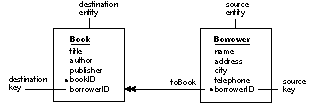 |
| Figure 12. A To-Many Relationship
Notice that the relationship keys for the toBook relationship are the same as for toBorrower. However, the source and destination key assignments are reversed. In other words, whereas Book.borrowerID is the source key for the toBook relationship, it's the destination key for toBorrower; similarly does Borrower.borrowerID change destination and source key roles between the two relationships. This switch does more than demonstrate that the same attributes can be used as relationship keys in more than one relationship; it also exemplifies the typical orientation of the primary key with regard to the relationship keys in to-one and to-many relationships: |
| In a to-one relationship, the destination key is usually the primary key for its entity. | ||
| In a to-many relationship, the source key is usually a primary key. |
| Resolving a To-Many Relationship
The only difference in the relationship resolution routine between a to-one and a to-many relationship is the number of destination records that are found. A to-one relationship stops when the first (and what should be the only) matching destination record is found. A to-many relationship finds all the destination records that resolve the relationship for the given source record.
Simulating a Bidirectional Relationship Since relationships, as defined by the Database Kit, are unidirectional, it's natural to assume that to simulate a bidirectional relationship--in other words, to express the natural relationship between two entities without regard for direction--all you need is two relationships: One that leads from entity A to entity B, and one that leads from entity B to entity A, as demonstrated by the toBorrower/toBook pair. Unfortunately, it isn't always that easy. Consider, for example, the actual relationship between books and authors. An author can write many books, and a single book can be contributed to by more than one author. Given that attributes can only characterize atomic data, the author attribute in the Book entity is improper (since it may have to hold a list of names) and should be removed. To characterize author data, you create a separate Author entity, as shown below. |
| 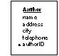 |
| Figure 13. The Author Entity
You might be tempted to form a to-many relationship between Book and Author (called toAuthor). Similarly, you would want to form the to-many toBook relationship between Author and Book (to show that a single author may have written more than one book). But this doesn't work because it's impossible to assign relationship keys that would support this set-up. For example, you can't use, in the toAuthor relationship, the bookID attribute as a source key because the destination key, Author.bookID (added as a foreign key), wouldn't be atomic. This follows from the notion that an author may write more than one book. Importing authorID as a foreign key into Book raises the same objection: The attribute wouldn't be atomic (since a book may have more than one author). To simulate this "many-to-many" relationship (as it's called in traditional E-R modeling), you need to create an auxiliary entity that stands between Book and Author, and form a network of relationships to and from it. This is depicted in Figure 14. |
| 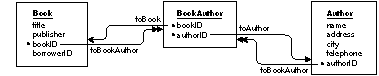 |
| Figure 14. A Many-to-Many Model
The compound primary key used in BookAuthor indicates that the entity characterizes unique combinations of books and authors. The table that the entity represents would hold a different record for each author of every book (which is the same as saying it holds a unique record for each book of every author). For example, if three authors contributed to a single book, there would be three BookAuthor instances with the same value for the bookID attribute, but each record would have a different value for its authorID attribute. The relationships between Book, BookAuthor, and Author let you find all the authors for a particular book, and all the books for a particular author: |
| Given a "BOOK" record, you resolve the Book.toBookAuthor relationship to find all the "BOOKAUTHOR" records for that book. You would then resolve, in turn, the BookAuthor.toAuthor relationship for each of these records. Thus do you get all the "AUTHOR" records for the original "BOOK" record. | ||
| To get the books for a particular author, you go in the opposite direction: You start with an "AUTHOR" record, resolve Author.toBookAuthor, then resolve BookAuthor.toBook. |
| The Tables Behind the Many-to-Many Model
To better understand how the many-to-many model works, it helps to see an example of the tables that store the data. First, we must change the contents of our library to introduce multiple authors. The new list of books and their authors is: |
| Farewell to Farms by Harnet Loonset and Aldo Ciccolini Pelican Island by Giles Binchois Good Times by Aldo Ciccolini, Celina Rumby, and Giles Binchois Junior Wrestling Yearbook (no identifiable author) The Crime of the Century by Giles Binchois and Celina Rumby David Westfield by Aldo Ciccolini The Prince and the People by Celina Rumby and Harnet Loonset The Green Hills of Alabama by Harnet Loonset, Aldo Ciccolini, and Celina Rumby The Small Business Directory (no identifiable author) The Tale of Two Towns by Aldo Ciccolini and Giles Binchois The Rest of the Angels by Giles Binchois |
| The "BOOK" and "AUTHOR" tables that are filled with this information are shown in Figure 15 (omitting data for non-essential attributes). |
| 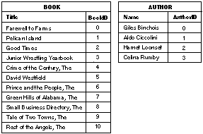 |
| Figure 15. "BOOK" and "AUTHOR" Tables
The "BOOKAUTHOR" table is shown in Figure 16 (for clarity, the titles and author names are shown in the margins). |
| 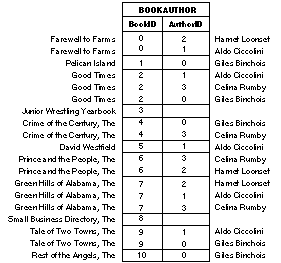 |
| Figure 16. The "BOOKAUTHOR" Table
As expected, some values appear more than once for the bookID attribute; similarly are values for authorID repeated. But since bookID and authorID form a compound primary key for the BookAuthor entity, no two records may possess the same combination of values for these two attributes. This is the E-R way of signifying that a single book may have more than one author, and a single author may have written more than one book, but no book may have been written more than once by the same author, nor may any single author write the same book twice.
Equijoins and Outer Joins The Database Kit demands that every relationship be declared as either an equijoin or an outer join. The purpose of the declaration only makes sense if you understand what a join is. Roughly put, the practice of joining lets you fabricate a table that contains columns that are based on attributes from different entities--in other words, the columns are "joined" together in a single table (it's convenient to speak of the attributes that represent these columns as being joined as well). However, you can't join arbitrary attributes from various entities: To join attributes from two different entities, there must be a relationship between the entities. For example, the toBorrower relationship lets you join attributes from the Book and Borrower entities. The result of the join could be captured in a single table (in your application--a join doesn't conjure up an actual server table). The table below is the result of joining the Book.title and Book.toBorrower.name attributes. |
| Figure 17. A Join through the toBorrower Relationship
The NULL values in the right column indicate that the books titled The Crime of the Century, The Green Hills of Alabama, and The Tale of Two Towns aren't checked out. Nonetheless, the titles of these books find their way into the table. This is because toBorrower was declared as an outer join: In an outer join, all source records are included in the result of the join. If we declare toBorrower to be an equijoin, the table would appear as shown below. |
| Figure 18. Using toBorrower as an Equijoin
In an equijoin, if a destination record can't be found for a given source record, then the source record isn't included in the result of the join.
Joins and To-Many Relationships Only to-one relationships can join attributes. Thus, the equijoin/outer join declaration doesn't have any meaning for a to-many relationships. You still have to declare your to-many relationships as one or the other, however. |